우리 한글날에 어울리는 문화 콘텐츠를 찾아보세요!
전통문양을 활용한 다양한 사례와 디자인에 활용된 문양 정보를 볼 수 있는 코너입니다
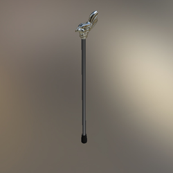
[봉황문] 산악 지팡이
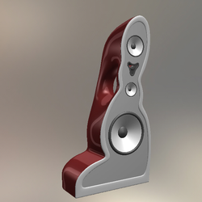
[동그라미문] 스피커
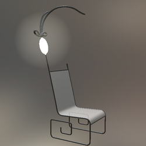
[칠보문] 램프 의자
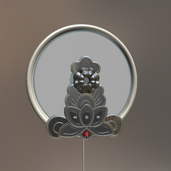
[연꽃문] 벽걸이 CD플레이어
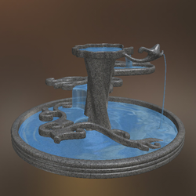
[보상덩굴문] 분수대
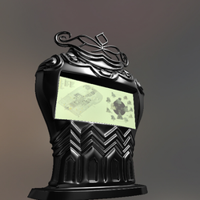
[여의두문] 키오스크
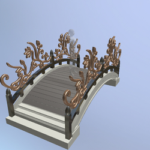
[연덩굴문] 나무다리
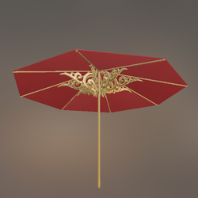
[연덩굴문] 파라솔
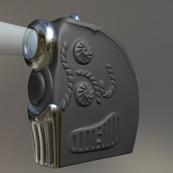
[거북문] 영사기
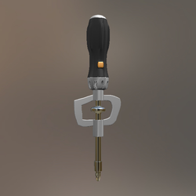
[기타] 드라이버
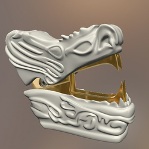
[용문] 제침기
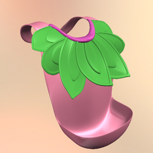
[연꽃문] 아기 턱받이
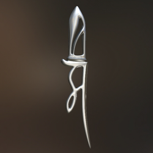
[범자문] 종이칼
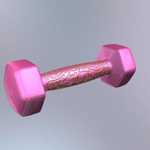
[덩굴문] 아령
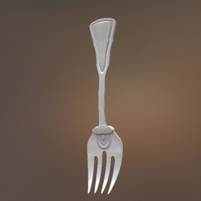
[불꽃문] 포크
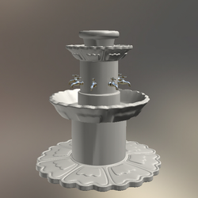
[연꽃문] 분수대
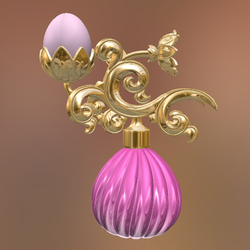
[연꽃문, 연덩굴문] 향수통
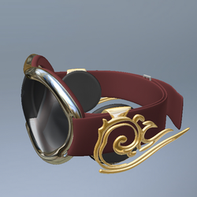
[구름문] 시계
[기타] 커피 그라인더
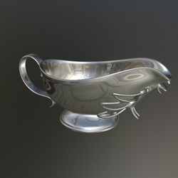
[기타] 카레주전자
[복자문] 공기청정기
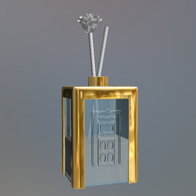
[복자문] 디퓨저
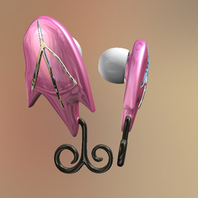
[풀꽃덩굴문] 헤드폰
[기타] 개줄 손잡이
관련기관 안내